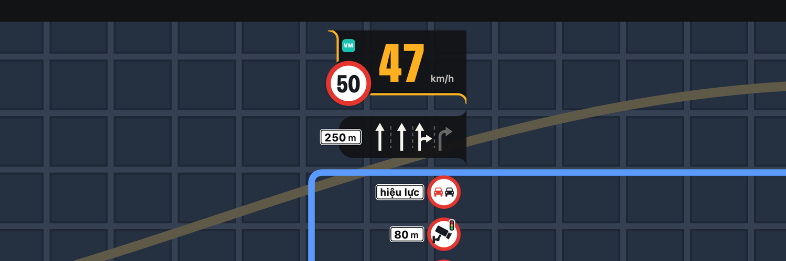
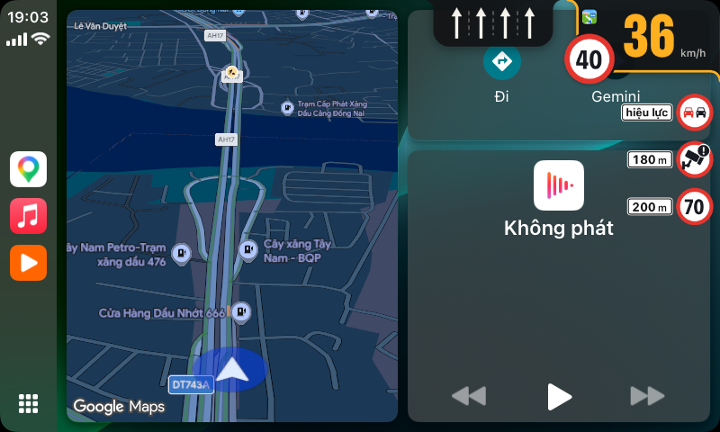
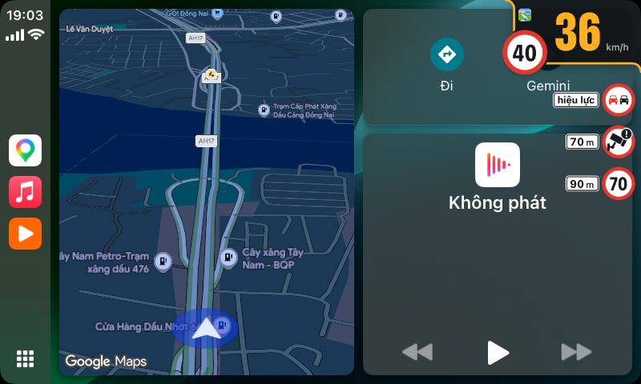
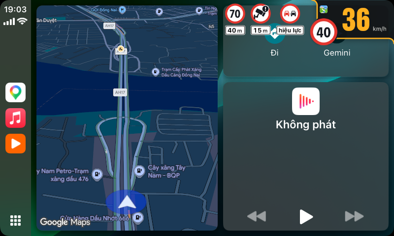
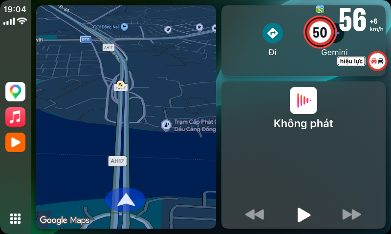

Lề, liếc là biết.

Tốc độ, biển giới hạn, biển báo và làn đường trên CarPlay, từ VietMap Live, GOFA hoặc Waze: một bubble nổi trên mọi màn hình và một thẻ trong Google Maps.
Xem Lề
Góc
Lề đứng
Lề ngang
Trần, khi vượt